| 日付 | 2020年11月29日（日） |
|---|---|
| 山域 | 駿河 |
| メンバー | 家族（妻、長女・9歳、長男・7歳） |
| 山行形態 | 子連れ日帰り |
| アクセス | 車 |
| ルート (Map) | 陵草スポーツ広場 (8:22) - (9:52) 焼山峠 - (10:12) 晴海展望台 (10:21) - (10:35) 焼山峠 - (10:51) 貫ヶ岳 (11:32) - (11:44) 焼山峠 - (12:38) 陵草スポーツ広場 |
今週末は山梨方面が晴れそうなため、山梨の貫ヶ岳に登ることにする。
3年前に樽峠から貫ヶ岳を目指したが、時間切れで晴海展望台までしか
辿り着けなかった。今回はそのリベンジ登山だ。
前回と登山口を変えて中沢登山口から貫ヶ岳を目指す。
陵草スポーツ広場の駐車場に車を停める。標高270m。
だだっ広い広場で一台も車が停まってなかったが、
準備をしていると一台車がやって来る。
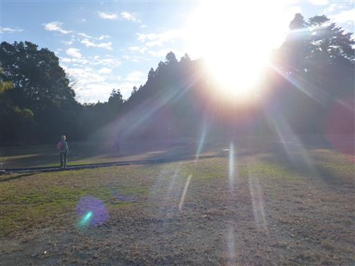
駐車場付近から遠く白い山々が見える。
南アルプスの北岳の辺りだろうか？
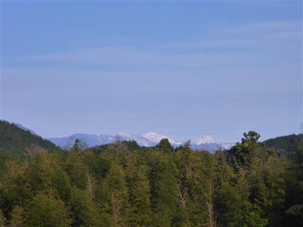
目の前にはこれから目指す貫ヶ岳が見える。
標高はあまり高くなく、久々の楽々登山だ。
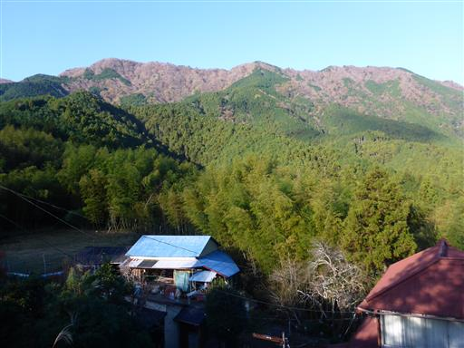
小さな木が厳重にフェンスで囲まれている。
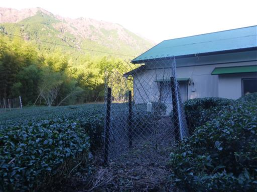
しばらくは車道を歩く。周囲は密集した竹林だ。
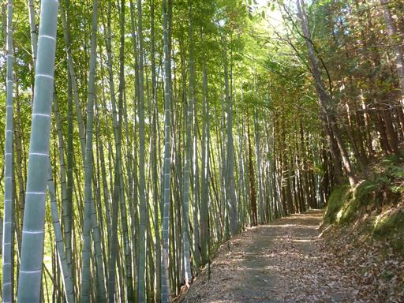
登山口に到着。標識はあるが、気を付けて歩かないと見逃してしまいそうな登山口だ。
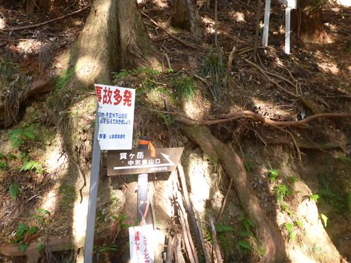
しばらくは植林地帯の登山道が続く。
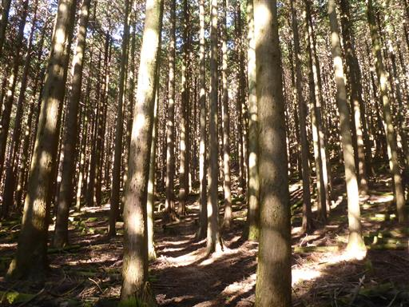
木の間から少しだけ展望が広がる。
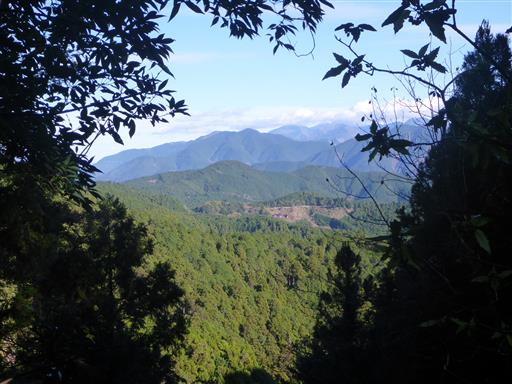
標高差は大きくないが、案外急斜面の登山道だ。
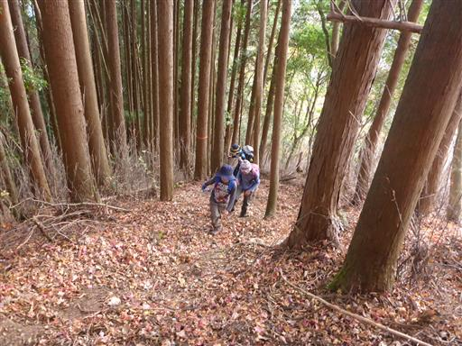
標高を上げていくと、ようやく植林地帯から解放される。
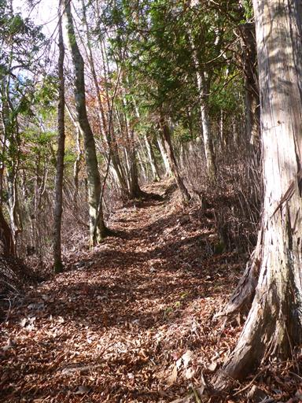
僅かに紅葉が残っている。
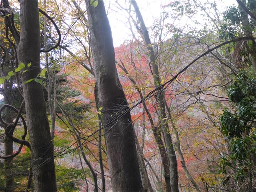
焼山峠に到達。貫ヶ岳まで15分と記載されているところに、+15分と落書きされている。
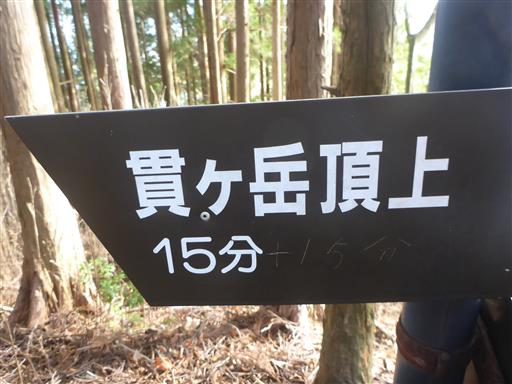
貫ヶ岳に向かう前に、前回の登山での到達点である晴海展望台まで行くことにする。
貫ヶ岳とは反対方向だ。
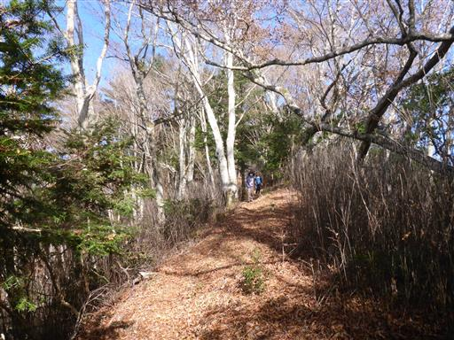
真ん中に穴の開いた左右対称の木。
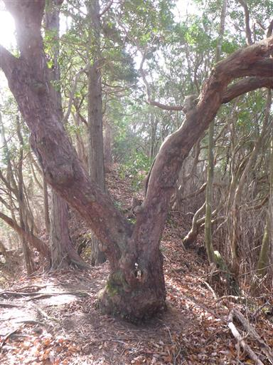
立派なブナの木。
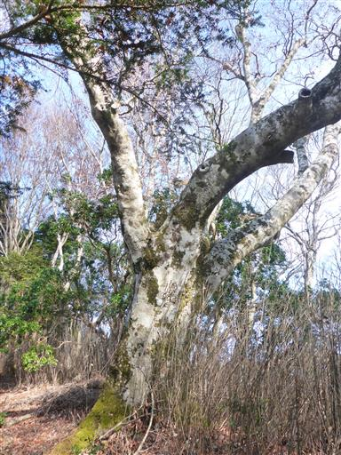
あっという間に晴海展望台に到着する。3年振りの訪問だ。
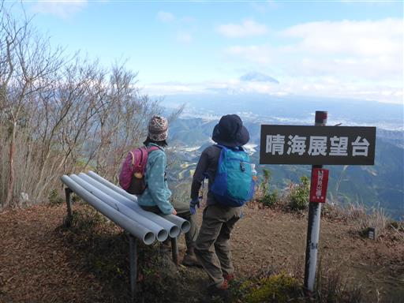
前回訪問時は富士山の山頂部に雲がかかっていたが、
本日は中腹に雲がかかっているものの山頂部はきれいに見えている。
富士山の景色も3年前のリベンジだ。

元来た道を戻って、今度は貫ヶ岳を目指す。
足元に穴の開いた大木が立っている。写真では分かりにくいが穴は貫通している。
モミの木だろうか？
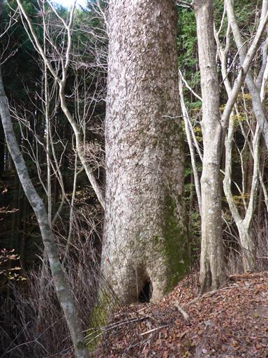
こちらもあっという間に貫ヶ岳に到着する。標高897m。
焼山峠から17分で、15分+15分は言い過ぎだろう。
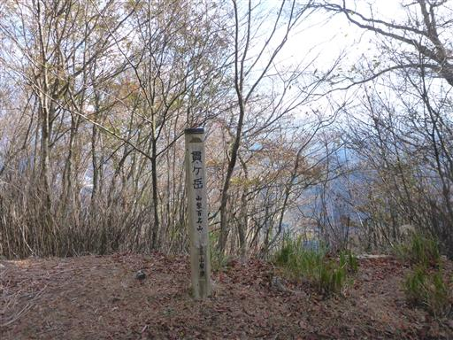
奥に小さな山頂標識がある。この形の標識は静岡県でよく見られるものだが、
この山の山頂部は完全に山梨県内にある。
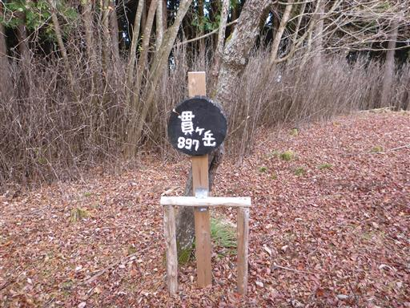
山頂標識から少しだけ西に行った場所の方が標高が高そうだ。
ここが本当の山頂と思われるが、植林地帯の中で他に何も無い。
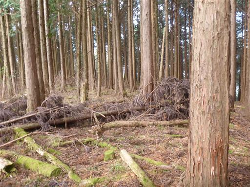
あっという間に下山。久々に早く下山できた。
3年前のリベンジ登山は、あっさりと目的を果たすことができた。
子供たちの3年間の成長を感じられる登山だった。
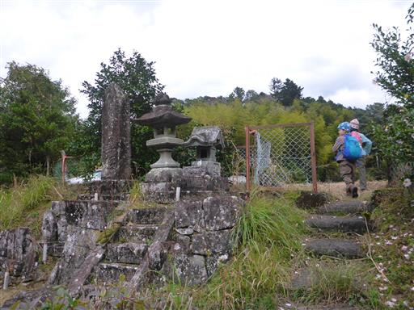